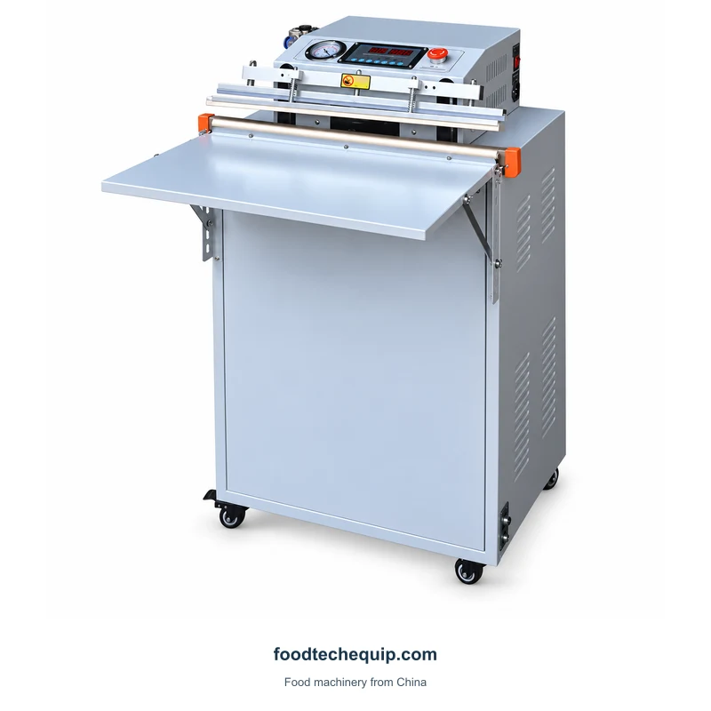

معدات التعبئة
آلة تعبئة السوائل على خط الإنتاج
تتوفر تجهيزات تضم 2 أو 4 أو 5 أو 6 أو 8 أو 10 أو 12 رأس تعبئة بمضخة مغناطيسية. قارن حجم التعبئة وأبعاد الزجاجة حسب التجهيز.
عرض المعداتتورّد FTE معدات تجهيز الأغذية وتعبئتها وتصدّرها من شوتشو، الصين. قارن آلات الخلط وتحديد الجرعات والتعبئة والإغلاق، واذكر نوع المنتج وأبعاد العبوة ومعدل الإنتاج المطلوب عند طلب عرض السعر.
إرشادات التركيب · تدريب المشغّلين · قطع الغيار · الدعم عن بعد


معدات للاستخدامات غير الغذائية
قارن معدات التعبئة والتغليف في الأكياس والتعبئة بالتفريغ. راجع مواصفات كل تجهيز على حدة.
تتوفر تجهيزات تضم 2 أو 4 أو 5 أو 6 أو 8 أو 10 أو 12 رأس تعبئة بمضخة مغناطيسية. قارن حجم التعبئة وأبعاد الزجاجة حسب التجهيز.
عرض المعدات
خط تعبئة ووزن المسحوق مزود بمناولة المواد وناقل وعناصر تحكم متكاملة.
عرض المعداتآلة رأسية لتعبئة الحبيبات في أكياس صغيرة، مزودة بقادوس ونظام لتغذية الفيلم. السرعة المذكورة 10–23 عبوة/دقيقة.
عرض المعدات
آلة تُغذّى بلفافة فيلم لإنتاج أكياس صغيرة محددة الشكل للسوائل أو الصلصات. السرعة المذكورة للتجهيز 200 هي 35–100 كيس/دقيقة.
عرض المعداتآلة رأسية للتعبئة بالتفريغ باستخدام شفط خارجي وطاولة بكرات تسند العبوة في موضع العمل.
عرض المعدات
آلة أرضية للحام الأكياس بالتفريغ، مزودة بطاولة إسناد أمامية وقضيب لحام علوي.
عرض المعداتاذكر نوع المادة وشكل العبوة ومعدل الإنتاج المطلوب، لنساعدك على مقارنة التجهيزات وتحديد الدعم المناسب.
نبذة عن Food Tech Equipment Co., Ltd. ↗
كيف يمكن أن يساعد FTE ↗حجم المادة أو الحاوية أو الكيس والمخرجات المطلوبة والوجهة.
قم بمراجعة النماذج والتكوينات والتوافق ذات الصلة.
ناقش عرض السعر وإرشادات التركيب والتدريب وقطع الغيار.
ابدأ بنوع المادة وشكل العبوة النهائية وطريقة مناولتها. توضّح الأدلة البيانات اللازمة لمقارنة التجهيزات.
استكشاف أدلة الاختيار ↗أخبرنا بما تنتجه وطريقة تعبئته ومعدل الإنتاج الذي تحتاج إليه.